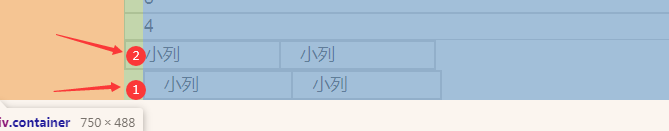

1. 概述
1.1 原理
使用媒体查询针对不同宽度的设备进行布局和样式的设置，从而适配不同设备的目的。
| 设备划分 | 尺寸区间 |
|---|---|
| 超小屏幕（手机） | < 768px |
| 小屏设备（平板） | >= 768px ~ < 992px |
| 中等屏幕（以前的小桌面显示器） | >= 992px ~ < 1200px |
| 宽屏设备（桌面显示器） | >= 1200px |
1.2 布局容器
1.响应式需要一个父级做为布局容器，来配合子级元素来实现变化效果。
原理就是在不同屏幕下，通过媒体查询来改变这个布局容器的大小，再改变里面子元素的排列方式和大小，从而实现不同
屏幕下，看到不同的页面布局和样式变化。
2.平时我们的响应式尺寸划分
超小屏幕（手机，小于 768px）：设置宽度为 100%
小屏幕（平板，大于等于 768px）：设置宽度为 750px
中等屏幕（桌面显示器，大于等于 992px）：宽度设置为 970px
大屏幕（大桌面显示器，大于等于 1200px）：宽度设置为 1170px
- 为什么后3个，设置的总比总宽度小一些，视频里说的是为了两边留些空白，好看；2020-10-24 02:03:47
但是我们也可以根据实际情况自己定义划分，上面的只是比较常用；
3.代码练习：
- 平常这些代码在bootstrap.css里面，这里是自己写css；
1 |
|
- screen
英 [skriːn] 美 [skriːn]
n.屏幕;荧光屏;荧屏;银幕;(统称)电影，电视
v.掩藏;遮蔽;保护;庇护;包庇;袒护;筛查;检查 - media
英 [ˈmiːdiə] 美 [ˈmiːdiə]
n.大众传播媒介，大众传播工具(指电视、广播、报纸、互联网)
medium的复数
1.3 案例：导航
响应式导航；视频
1. 需求分析
①当我们屏幕大于等于768像素，我们给nav宽度为750px，因为里面子盒子需要浮动，所以nav需要清除浮动。
② nav里面包含8个小li 盒子，每个盒子的宽度定为 93.75px（750/8）， 高度为 30px，浮动一行显示。
③ 当我们屏幕缩放，宽度小于768像素的时候， nav盒子宽度修改为 100% 宽度。
④ nav里面的8个小li，宽度修改为 33.33%，这样一行就只能显示3个小li ，剩余下行显示。
2. 代码：
1 |
|
视频结束于P502；2020-10-24 03:04:16
2. Bootstrap
2.1 简介
1.Bootstrap 来自 Twitter（推特），是目前最受欢迎的前端框架。Bootstrap 是基于 HTML、CSS 和 JAVASCRIPT 的，它
简洁灵活，使得 Web 开发更加快捷。
中文官网：http://www.bootcss.com/
官网：http://getbootstrap.com/
推荐使用：http://bootstrap.css88.com/
- 但 推荐使用 这个网址，已经打不开了；打开是一个站点创建成功；2020-10-25 03:40:39
- 今天实验的时候，又打开了；2020-11-29 16:56:08
2.框架：顾名思义就是一套架构，它有一套比较完整的网页功能解决方案，而且控制权在框架本身，有预制样式库、组件和
插件。使用者要按照框架所规定的某种规范进行开发。
1. 优点
标准化的html+css编码规范
提供了一套简洁、直观、强悍的组件
有自己的生态圈，不断的更新迭代
让开发更简单，提高了开发的效率
2. 版本
2.x.x：停止维护,兼容性好,代码不够简洁，功能不够完善。
3.x.x：目前使用最多,稳定,但是放弃了 IE6-IE7。对 IE8 支持但是界面效果不好,偏向用于开发响应式布局、移
动设备优先的 WEB 项目。
4.x.x ：最新版，目前还不是很流行，里面到底如何，比3.X.X好不好呢？不清楚；
2.2 使用
1.在现阶段我们还没有接触JS相关课程，所以我们只考虑使用它的样式库。
2.控制权在框架本身，使用者要按照框架所规定的某种规范进行开发。
3.Bootstrap 使用四步曲： 1. 创建文件夹结构 2. 创建 html 骨架结构 3. 引入相关样式文件 4. 书写内容
1. 创建文件夹
1.单纯的创建一个文件夹；
2.bootstrap的css与js，放在里面。不要放在外面的css和js文件里；2020-10-25 03:58:49
2. 创建html骨架结构
1 |
|
解析：
2
3
4
5
6
7
8
9
10
11
<meta http-equiv="X-UA-Compatible" content="IE=edge">
<!--视口的设置：视口的宽度和设备一致，默认的缩放比例和PC端一致，用户不能自行缩放-->
<meta name="viewport" content="width=device-width, initial-scale=1, user-scalable=0">
<!--使用了一下，没啥感觉-->
<!--[if lt IE 9]>
<!--解决ie9以下浏览器对html5新增标签的不识别，并导致CSS不起作用的问题-->
<script src="https://oss.maxcdn.com/html5shiv/3.7.2/html5shiv.min.js"></script>
<!--解决ie9以下浏览器对 css3 Media Query 的不识别 -->
<script src="https://oss.maxcdn.com/respond/1.4.2/respond.min.js"></script>
<![endif]-->
但其实也可以不写：
也可以不写第2行：
<meta http-equiv="X-UA-Compatible" content="IE=edge">不用强制使用IE浏览器内核来渲染吧；
2020-10-25 04:09:11
<!--[if lt IE 9]> <script src="https://oss.maxcdn.com/html5shiv/3.7.2/html5shiv.min.js"></script> <script src="https://oss.maxcdn.com/respond/1.4.2/respond.min.js"></script> <![endif]--> <!--hexoPostRenderEscape:<figure class="highlight yaml"><table><tr><td class="gutter"><pre><span class="line">1</span><br><span class="line">2</span><br><span class="line">3</span><br><span class="line">4</span><br><span class="line">5</span><br><span class="line">6</span><br><span class="line">7</span><br><span class="line">8</span><br><span class="line">9</span><br><span class="line">10</span><br></pre></td><td class="code"><pre><span class="line"></span><br><span class="line"> <span class="string">也可以不写，一般没有IE浏览器；</span></span><br><span class="line"></span><br><span class="line"><span class="meta">---</span></span><br><span class="line"></span><br><span class="line"><span class="comment">#### 3. 引入样式</span></span><br><span class="line"></span><br><span class="line"><span class="string">```html</span></span><br><span class="line"><span class="string"><link</span> <span class="string">rel="stylesheet"</span> <span class="string">href="./6-bootstrap/css/bootstrap.min.css"></span></span><br><span class="line"><span class="string">title>Document</title></span></span><br></pre></td></tr></table></figure>:hexoPostRenderEscape-->
4. 输入内容
1.直接拿Bootstrap 预先定义好的样式来使用
2.修改Bootstrap 原来的样式，注意权重问题
2.1 比如：
1.
<div class="btn btn-success">登录</div>2.你不想要它的样式，你想改变一些长宽；
2.1 你可以加个类；（不要轻易修改bootstrap的原文件）
<div class="btn btn-success login">登录</div>2.3 预览：
1
2
3
4
5
6
7
8
9
10<style>
.login {
width: 80px;
}
</style>
</head>
<body>
<div class="btn btn-success">登录</div>
<div class="btn btn-success login">登录</div>
</body>
2.2 也可以去css文件改，但这样会打乱你记忆原版的样子。不建议，建议新添加自己的类；
- 3.想修改其他样式，或添加，同理；2020-10-25 04:28:48
3.学好Bootstrap 的
1.可以在官网先看一些有的资料。一个个去实验，或者去查看代码要比这个先慢一些。毕竟有预览效果；
2.3 布局容器
1.响应式开发页面，需要一个大的布局容器
2.Bootstrap 需要为页面内容和栅格系统包裹一个 .container 容器，它提供了两个作此用处的类。
2.1 container 类
响应式布局的容器 固定宽度
大屏 ( >=1200px) 宽度定为 1170px
中屏 ( >=992px) 宽度定为 970px
小屏 ( >=768px) 宽度定为 750px
超小屏 (100%)
- 这个类自己把媒体查询就写好了；
- 当然还有其他属性，内边距等等，自己查看；
2.2 container-fluid 类
流式布局容器 ，百分百宽度，一直是100%
占据全部视口（viewport）的容器。
适合做移动端页面
3. 栅格系统
3.1 简介
0.开始于P508
1.栅格系统英文为“grid systems”,也有人翻译为“网格系统”，它是指将页面布局划分为等宽的列，然后通过列数
的定义来模块化页面布局。
2.Bootstrap 提供了一套响应式、移动设备优先的流式栅格系统，随着屏幕或视口（viewport）尺寸的增加，系统会
自动分为最多12列。
Bootstrap里面container宽度是固定的，但不同屏幕下，container宽度不同，我们再把container划分为12等份；
- 但父元素是container；
3.2 参数
1.可在官网查看其他资料：https://v3.bootcss.com/css/#grid
2.栅格系统用于通过一系列的行（row）与列（column）的组合来创建页面布局，你的内容就可以放入这些创建好的布局中。
2.1 row
英 [rəʊ , raʊ] 美 [roʊ , raʊ]
n.一排;一列;一行;(剧院、电影院等的)一排座位;(编织中的)针行，一整行
v.划(船);划船送(某人)
n.严重分歧;纠纷;吵架;争吵;大的噪音
v.吵架;大声争辩
2.2 column
英 [ˈkɒləm] 美 [ˈkɑːləm]
n.柱;(通常为)圆形石柱;纪念柱;圆柱状物;柱形物;(书、报纸印刷页上的)栏
- 先有行，后有列；
| 超小屏幕 手机 (<768px) | 小屏幕 平板 (≥768px) | 中等屏幕 桌面显示器 (≥992px) | 大屏幕 大桌面显示器 (≥1200px) | |
|---|---|---|---|---|
| 栅格系统行为 | 总是水平排列 | 开始是堆叠在一起的，当大于这些阈值时将变为水平排列C | 同左 | 同左 |
.container 最大宽度 |
None （自动） | 750px | 970px | 1170px |
| 类前缀 | .col-xs- |
.col-sm- |
.col-md- |
.col-lg- |
| 列（column）数 | 12 | 同左 | 同左 | 同左 |
- 行（row）必须放到container布局容器里面
- 我们实现列的平均划分，需要给列添加
类前缀 - xs-extra small：超小； sm-small：小； md-medium：中等； lg-large：大；
- extra
英 [ˈekstrə] 美 [ˈekstrə]
adj.额外的;分外的;外加的;附加的
n.额外的事物;另外收费的事物;(电影里的)临时演员，群众演员
adv.额外;另外;外加;特别;格外;分外
- extra
- 列（column）大于 12，多余的“列（column）”所在的元素将被作为一个整体另起一行排列
- 每一列默认有左右15像素的 padding
- 可以同时为一列指定多个设备的类名，以便划分不同份数 例如 class=”col-md-4 col-sm-6”
3.行列代码练习：
预览：
1 |
|
P508-end
3.1 如果在中等屏幕下，一行占3个怎么写？
1 | <div class="row"> |
- 为什么col-md有这样的效果，因为在bootstrap.css那边已经弄好了媒体查询
3.3 列嵌套
1.栅格系统内置的栅格系统将内容再次嵌套。简单理解就是一个列内再分成若干份小列。我们可以通过添加一个新的 .row 元素和一系
列 .col-sm-* 元素到已经存在的 .col-sm-* 元素内。
1 | <!-- 列嵌套 --> |
2.栅格系统的参数是相对于父元素的，也是因为一个盒子的宽度继承父盒子的宽度；
1 | <div class="container"> |
3.为什么加了row就能取消父元素的padding？父元素的padding是：.container的内边距；

3.1 取消，不是取消。应该是抵消；在.row类里面有这样的代码：
- 负的外边距。
4.如果不加row，就是这样：

- 1.在①处，就是没有row的，被寄过去了15px；
- 2.在②处，因为row的-15px的外边距，又弹了回去；2020-11-30 01:02:01
3.4 列偏移
1.P511；2020-10-28 00:18:01
2.使用 .col-md-offset-* 类可以将列向右侧偏移。这些类实际是通过使用 * 选择器为当前元素增加了左侧的边距（margin）。
2.1 在栅格系统，有浮动。一行不满12列的时候，不同的列块只会靠在一起；
2.2 如何让不满12的情况下，分开列块呢？用浮动覆盖吗？但这里是响应式，固定的px无法动态的变化
2.3 只能用bootstrap给的：.col-md-offset-* 类
- offset
英 [ˈɒfset] 美 [ˈɔːfset]
v.抵消;弥补;补偿
adj.胶印的
n.开端;出发;平版印刷;抵消;补偿
3.代码练习
3.1 练习框架：
1 |
|
3.2 将右侧盒子往右侧偏移4份；2020-10-28 00:37:01
<div class="col-md-4 col-md-offset-4">右侧</div>
3.3 预览：
2. 居中
1.如果只有一个盒子，能居中吗？
2.可以，例如：
1 | <div class="row"> |
2.1 因为只有一个盒子；
2.2 所以右偏移剩下的列数/2就可以了，左边一半，右边一半；
3.预览：

3.5 列排序
1.通过使用 .col-md-push-* 和 .col-md-pull-* 类就可以很容易的改变列（column）的顺序。
2.例如：
左侧跑到右侧，右侧跑到左侧；
1 | <!-- 列排序 --> |
3.push
英 [pʊʃ] 美 [pʊʃ]
v.推动(人或物);移动(身体部位);推进(道路);挤开;推动;促使(达到某程度或状态)
n.推;搡;进攻;攻势;挺进;矢志的追求;坚定的努力
3.1 pull
英 [pʊl] 美 [pʊl]
v.拉;拽;扯;拖;拔出;抽出;(向某方向)拖，拉动
n.拉;拽;扯;力;引力;磁力;吸引力;诱惑;影响
4.左侧推出去，右侧拉过来；
5.自己练习：
1 | <div class="container"> |
5.1 如图所示：
3.6 响应式工具
0.视频：P513；
0.1 bootstrap中文官网此部分：链接
1.为了加快对移动设备友好的页面开发工作，利用媒体查询功能，并使用这些工具类可以方便的针对不同设备展示
或隐藏页面内容。
| 超小屏幕手机 (<768px) | 小屏幕平板 (≥768px) | 中等屏幕桌面 (≥992px) | 大屏幕桌面 (≥1200px) | |
|---|---|---|---|---|
.visible-xs-* |
可见 | 隐藏 | 隐藏 | 隐藏 |
.visible-sm-* |
隐藏 | 可见 | 隐藏 | 隐藏 |
.visible-md-* |
隐藏 | 隐藏 | 可见 | 隐藏 |
.visible-lg-* |
隐藏 | 隐藏 | 隐藏 | 可见 |
.hidden-xs |
隐藏 | 可见 | 可见 | 可见 |
.hidden-sm |
可见 | 隐藏 | 可见 | 可见 |
.hidden-md |
可见 | 可见 | 隐藏 | 可见 |
.hidden-lg |
可见 | 可见 | 可见 | 隐藏 |
1.1 visible；英 [ˈvɪzəbl] 美 [ˈvɪzəbl] ；adj.看得见的;可见的;明显的;能注意到的
2.代码练习
1 | <style> |
2.1 说明
- 1只在超大屏幕显示，3在中等屏幕与超小屏幕隐藏；2020-10-28 06:38:59
4. 案例
1.阿里百秀首页
1. 技术选型
方案：我们采取响应式页面开发方案
技术：bootstrap框架
设计图： 本设计图采用 1280px 设计尺寸
2. 需求分析
2.1 页面布局
1.article
英 [ˈɑːtɪkl] 美 [ˈɑːrtɪkl]
n.(报刊上的)文章，论文，报道;(协议、契约的)条款，项;物件，物品(尤指整套中的一件)
vi.使受协议条款的约束;以协议（或契约）约束;订约将…收为学徒（或徒弟）;定约雇用进行控告;提出罪状（或指责）(against);签订协议
2.aside
英 [əˈsaɪd] 美 [əˈsaɪd]
adv.到旁边;在旁边;留;存;(用于名词后)除…以外
n.旁白;低声说的话;离题话
2.2 屏幕划分
① 屏幕缩放发现 中屏幕 和 大屏幕布局 是一致的。 因此我们列 定义为 col-md- 就可以了， md 是大于等于 970 以上的
② 屏幕缩放发现 小屏幕 布局发生变化，因此我们需要为 小屏幕根据需求改变布局
③ 屏幕缩放发现 超小屏幕布局又发生变化，因此我们需要为 超小屏幕根据需求改变布局
④ 策略： 我们先布局 md以上的 pc端布局，最后根据实际需求在修改 小屏幕 和 超小屏幕的 特殊布局样式
3. 页面制作
1.Bootstrap 使用四步曲： 1. 创建文件夹结构 2. 创建 html 骨架结构 3. 引入相关样式文件 4. 书写内容
2.创建文件夹，在本地创建一个放写代码的，或相关资料的文件夹；
3.创建html 骨架结构：
- 1.把页面布局结构写出即可
1 | <body> |
3.2 container修改
1.因为本效果图采取 1280的宽度， 而Bootstrap 里面 container宽度 最大为 1170px，因此我们需要手动改下container宽度
1 | /* 利用媒体查询修改 container宽度适合效果图宽度 */ |
3.3 logo制作
1.先布局；
1 | <body> |
2.放入logo图片，因为logo背景图片是白色的，所以背景颜色加个蓝
html：
1 | <header class="col-md-2"> |
css:
1 | .logo { |
3.去掉左内边距，但不能改col-md-2的，它是隶属于bootstrap的，一改全改，也会错乱bootstrap的使用；
3.1 css:
1 | header { |
- 在css那边修改标签header；
- 不过标签的权重只有1，类名的权重有10；所以要加个!important;
4.图片不随着变化，当宽度不够时，显示不完整
4.1 配置：父元素宽度100%
1 | /* 4 */ |
3.4 nav
5.建造nav
快捷写法：li*5>a ；
1 | <header class="col-md-2"> |
5.1 清除小点；清除外内边距
1 | ul { |
5.2 鼠标放上a，有底色变化。
1.把a变成块级元素，给个高度；2020-10-29 00:32:55
1
2
3
4
5
6
7
8/* 5.2.1 */
.nav a {
display: block;
height: 50px;
line-height: 50px;
padding-left: 30px;
font-size: 16px;
}1.1 改变a的文本颜色，取消下划线；同时添加灰色底色
1
2
3
4
5
6
7
8
9
10
11
12a {
color: #666;
text-decoration: none;
}
a:hover{
text-decoration: none;
}
.nav {
background-color: #eee;
border-bottom: 1px solid #ccc;
}
- 2.添加伪元素:hover
1 | /* 5.2.2 */ |
5.3 加入字体图标

1.包括250多个来自 Glyphicon Halflings 的字体图标。Glyphicons Halflings 一般是收费的，但是他们的作者允许 Bootstrap 免费使用。为了表示感谢，希望你在使用时尽量为 Glyphicons 添加一个友情链接。
2.复制图标下的类名，即可使用；https://v3.bootcss.com/components/
3.利用关键词可以快速查找：
例如：电话-phone，照相机-camera，图片-picture；
1 | <div class="nav"> |
5.3.1 图标垂直居中
1.图片是没对齐的，需要用css垂直居中；（此处：视频+6：19）
1 | .nav a::before { |
2.::before是什么情况？去详细看看这个居中的用法，看与before有什么关系没有；
在博客文章12里的8.5，有信息。看了后，没有自带before的信息。
这里的before是自己使用，应该就是字面意思。
- a元素之前的元素？
2.1 可以学习理解一下这种用法；2020-11-12 23:15:09
3.5 article
1.结构
1.开始做中间的；
- article
英 [ˈɑːtɪkl] 美 [ˈɑːrtɪkl]
n.(报刊上的)文章，论文，报道;(协议、契约的)条款，项;物件，物品(尤指整套中的一件)
vi.使受协议条款的约束;以协议（或契约）约束;订约将…收为学徒（或徒弟）;定约雇用进行控告;提出罪状（或指责）(against);签订协议
2.中间分为上下：
2.1 上设置为 news，下设置为publish
- publish
英 [ˈpʌblɪʃ] 美 [ˈpʌblɪʃ]
v.出版;发行;(在报刊)发表，刊登，登载;(在互联网上)发表，公布
1 | <article class="col-md-7"> |
2.写new的内容
3.先写news的内容；
3.1 里面有5个小模块。我第一反应还是div，视频里面说li，基本这种都用的li，可我还是想着div；2020-12-7 16:15:58
0.html那边还没写呢！2020-12-17 17:31:11
1
2
3
4
5
6
7
8
9
10
11
12
13
14<article class="col-md-7">
<!-- 新闻 -->
<div class="news">
<ul>
<li>1</li>
<li>2</li>
<li>3</li>
<li>4</li>
<li>5</li>
</ul>
</div>
<!-- 发表 -->
<div class="publish"></div>
</article>
1.先每个li，25%宽度，左浮动；
1
2
3
4.news li {
float: left;
width: 25%;
}
2.单独设置第一个盒子，宽度50%，高度266px；
1
2
3
4
5.news li:nth-child(1) {
width: 50%;
height: 266px;
background-color: pink;
}2.1 这个时候，回去在 .news li 里面添加高度128
1
2
3
4
5.news li {
float: left;
width: 25%;
height: 128px;
}预览：

（这里在视频；4：15处)
4.做这个；
4.1 html：
1
2
3
4
5
6
7
8
9
10
11
12<div class="news">
<ul>
<li>
<img src="./3-img/lg.png" alt="">
<p>阿里百秀</p>
</li>
<li>2</li>
<li>3</li>
<li>4</li>
<li>5</li>
</ul>
</div>4.2 内边距；
1.全部一起，已经是100%，加外边距，就挤出去，混乱排版，只能内边距；

2.先完成了内边距，然后才能图片100%；
1
2
3
4
5
6.news li {
width: 25%;
float: left;
height: 128px;
padding-right: 10px;
}3.a标签是内联元素，改成块级
1、和其他元素都在一行上；
2、高度、行高和顶以及底边距都不可改变；
3、宽度就是它的文字或图片的宽度，不可改变。
总的来说，内联元素一般都是基于语义级(semantic)的基本元素，它只能容纳文本或者其他内联元素，通常被包括在块元素中使用，常见内联元素有“a、b、br”等。
1
2
3
4
5.news li a {
display: block;
width: 100%;
height: 100%;
}3.1 然后是img百分之百；
1
2
3
4.news li a img {
width: 100%;
height: 100%;
}没有效果？
news写成new了；呜呜，还找了许久，唉。代码真麻烦；也不报错；
4.3 下面的阿里百秀；

1.p标签里的内容，是被挤出去了。其实还是在那个框里面；
2.绝对定位先；
1
2
3
4
5
6
7
8
9
10.news li a p {
position: absolute;
bottom: 0;
left: 0;
width: 100%;
height: 41px;
background: rgba(0, 0, 0, 0.5);
font-size: 12px;
color: #fff;
}预览：

2.1 子绝父相；
1
2
3
4
5
6.news li a {
position: relative;
display: block;
width: 100%;
height: 100%;
}预览：

2.2 不过P标签这里有个下外边距，F12得知；
1
2
3
4
5
6
7
8
9
10
11.news li a p {
position: absolute;
bottom: 0;
left: 0;
width: 100%;
height: 41px;
margin-bottom: 0px;/*新加*/
background: rgba(0, 0, 0, 0.5);
font-size: 12px;
color: #fff;
}2.3 因为第一个li的P样式单独不一样；所以单独设置CSS；

1
2
3
4
5.news li:nth-child(1) p {
line-height: 41px;
font-size: 20px;
padding: 0 10px;
}4.4 右边的li
1.右边的简单，直接复制，改下内容即可；
1
2
3
4
5
6
7
8
9
10
11
12<li>
<a href="#">
<img src="./3-img/lg.png" alt="">
<p>阿里百秀</p>
</a>
</li>
<li>
<a href="#">
<img src="./3-img/1.jpg" alt="">
<p>坚持 就算学的少，每天也不能不学</p>
</a>
</li>预览：

2.剩下的，也是复制，粘贴，修改相应的数据；
1
2
3
4
5
6
7
8
9
10
11
12
13
14
15
16
17
18
19
20
21
22
23
24
25
26
27
28
29
30
31
32
33
34
35<article class="col-md-7">
<div class="news">
<ul>
<li>
<a href="#">
<img src="./3-img/lg.png" alt="">
<p>阿里百秀</p>
</a>
</li>
<li>
<a href="#">
<img src="./3-img/1.jpg" alt="">
<p>坚持 就算学的少，每天也不能不学</p>
</a>
</li>
<li>
<a href="#">
<img src="./3-img/2.jpg" alt="">
<p>坚持 就算学的少，每天也不能不学</p>
</a>
</li>
<li>
<a href="#">
<img src="./3-img/3.jpg" alt="">
<p>坚持 就算学的少，每天也不能不学</p>
</a>
</li>
<li>
<a href="#">
<img src="./3-img/1.jpg" alt="">
<p>坚持 就算学的少，每天也不能不学</p>
</a>
</li>
</ul>
</div>预览：

2.1 每个li还要加外下边距10px；
1
2
3
4
5
6
7.news li {
width: 25%;
float: left;
height: 128px;
padding-right: 10px;
margin-bottom: 10px;
}
3.下面的publish
1.结构：

1.1 一行一行的，每一行，分为左右。左边占9份，右边占3份；
1.2 栅格系统微：小屏幕为止都不变，超小屏幕才会变；
- 就可以用：col-sm-x；2021-1-1 15:30:40
1 | <div class="publish"> |
1.2.1 终于不是ul>li了；
2.这条线：

2.1 这第一根线，用publish的上边框；
1 | .publish { |
2.2 但会跑到news上面去，因为news里面的内容是浮动的；
- 在news类那里，添加类名：clearfix；
- bootstrap.css里面自带了clearfix类的CSS；2021-1-1 15:53:24
3.bootstarp的h；https://v3.bootcss.com/css/#type

1 | <div class="col-md-9"> |
3.1 下面是<p>
1 | <div class="col-md-9"> |

3.1.1 不需要，自己再写css，bootstrap.css有相关css；
3.1.2 辅助类；https://v3.bootcss.com/css/#helper-classes
<p class="text-muted">alibaixiu 发布于 2015-11-23</p>
4.下面全是<p>
1 | <div class="col-md-9"> |

5.右边图片
5.1 html：
1 | <div class="col-md-3"> |
5.2 CSS:
1 | .pic img { |
6.底部的线；2021-1-2 17:16:37
1 | .publish .row { |
7.整体一行的代码：html:
1 | <div class="row"> |
CSS:
1 | .publish { |
3.6 aside模块
1.aside
英 [əˈsaɪd] 美 [əˈsaɪd]
adv.到旁边;在旁边;留;存;(用于名词后)除…以外
n.旁白;低声说的话;离题话
2.
1 | <aside class="col-md-3"> |
3.
1 | .banner img { |
4.hot的高度不给，自然撑开；2021-1-4 18:26:06
1 | <a href="#" class="hot"> |
5.
1 | .hot { |
6.按钮；https://v3.bootcss.com/css/#buttons-options
<span class="btn btn-primary">热搜</span>
7.不要圆弧；
1 | .hot span { |
8.按钮下边距：
1 | .hot span { |
9.改字号：
1 | .hot p { |
3.7 logo响应式
1.当小屏幕时； (≥768px)
- 这个样子：

- 这样子不行；
2.用max-width，不缩放；图片最大宽度就是图片的宽度；
- 然后，也要居中；2021-1-5 03:09:02
1 | .logo img { |
2.1 不是块级元素，居中无效；
行内元素指的是可在同一行内排列的元素，列举几个常用行内元素：img、input、span、label、a、textarea、button。
通常要给元素设置居中得效果的话，很多人会先想到margin: 0 auto;可当用这种方法给行内元素设置时，行内元素没有呈现我们想要得居中效果，以下为解决方案（行内元素宽度给不给都可以）。
方法一：最笨得方法就是将行内元素的margin四个值或是父元素的padding四个值一步一步调（不推荐）；
方法二：先将行内元素设置为块级（display:block;）元素，再设置margin：0 auto；
方法三：将包裹行内元素的父元素写入我们常给文字居中的代码（text-align:center;）
- 行内元素就是内联元素，不同叫法；大概；
2.2 我用了方法三，给.logo img的父元素，.logo a，设置了text-align:center;
- 无效；
2.3 于是我给.logo a的父元素，.logo设置了text-align:center;
- 有效；
2.4 难道，父元素不是块级元素的text-align:center;没有效果？
3.8
3.x 代码：
1.html:
1 |
|
2.css:
1 | @media (min-width: 1280px) { |
x. 资料
1.视频资料：https://www.bilibili.com/video/BV14J4114768?p=499
2.pdf资料：
链接：https://pan.baidu.com/s/1wnjKpjBo22olVEs2KAhjpA
提取码：d0zw
- 想找PPT，pdf没ppt好用；
3.视频相应的代码资料： https://gitee.com/xiaoqiang001/html_css_material.git